Sokan, szerény személyem is, rajonganak az ókori kultúrákért. A történelem órák egyik legjobbja volt, mikor a görög-római hitvilág volt a téma. A sok isteneség és a róluk szóló történetenek kifogyhatatlan a tárháza. Ennek, a ma már letünt kornak modnot vilának a képzeteit ülteti át a jelenbe Rick Rionrad. Percy Jackson kaladjai újra életre keltik az ókori görög mitológia szereplőit.
Rick Rionrad
Pár szó az íróról
Richard Russell Riodan a Texas-i San Antonio-ban született 1964 június 5-ben. Tanulmányait szintén Texas-ban végezte, angol nyelv és történelem szakon. Ezt kövtően a környető általános iskolákban tanított angolt és törtételmet. Az amerikai regényírónak több sorozata is nagy sikernek örvend, mint például a 39 kulcs, de leginkább a Percy Jackson-ról szerzője ként lehet ismerős.
Ha még nem hallottál Percy Jacksonról
Percy egy problámás tizenkét éves, akit minden iskolából eltanácsolnak. Bármennyire igyekszik, úgy nem tűnik, képtelen távol tartani magától a bajt. Tényleg nem szabad megvédenie magát az algebra tanárnővel szemben, amikor az szörnyeteggé változik és meg akarja ölni? Bizony szörnyek igenis léteznek, sőt félistenek és intenek is. Percy ezen lények közti konfliktusba keveredik bele egy nyári tábor keretében, aminek kimetetelétől függ a világunk sorsa.
„Figyelemre méltó, milyen szellemi kacskaringókra képesek a halandók, hogy a dolgokat beillesszék a valóságról alkotott saját verziójukba.”
Rick Riordan
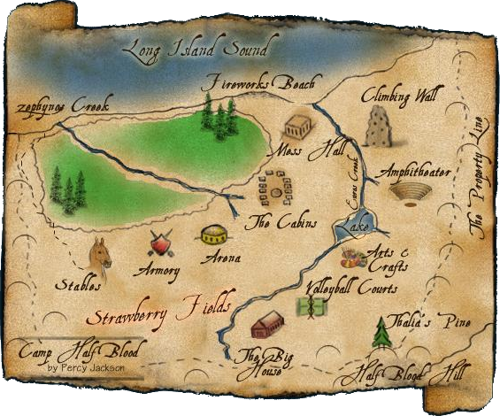
Félvér tábor
Ez a nyári tábor egy természet közeli hely. Erdő, tópart, tisztás mindt megtalálható. Sőt edző helyek is vannak minden féle sporthoz, mint például az íjjászat. Megvan a hangulata. Nade a Félvér tábor nem egy hét köznapi hely. A táborozók mindegyike egy-egy ókori görög istenség gyermeke, azaz félisten. Tizen két bungalló van a tábor területén mindegyik istennek egy. Minden bungallónak egyedi külseje, szokásai és lakói vannak, akik különleges erőkkel bírnak. Itt edzenek és készülnek fel a táborozók ez elkövekezendő küldetésekre.
Ha álmodtál már arról, hogy belevetnéd magad egy varázslatos lényekkel, félistenekkel, és szörnyekkel teli izgalmas világba, akkor itt a lehetőség. A Precy Jackson története csak öt kötetes sajnos. Viszont ha megtetszett a világa akkor az Az olinposz hősei sorozattal tovább maradhat részese az igalmas kalandokan.
Percy Jackson és az Olimposziak
Súgó
A táblázatban a könyvek alap adatait tüntetjük fel (cím és borítókép). A felsorolás a történet sorrendjét követi.
Cím
Borító
Percy Jackson és az Olimposziak A villámtolvaj
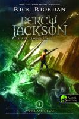
Percy Jackson és az Olimposziak A szörnyek tengere
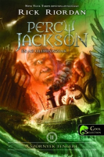
Percy Jackson és az Olimposziak A titán átka
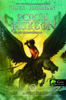
Percy Jackson és az Olimposziak Csata a labirintusban
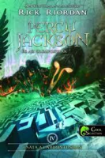
Percy Jackson és az Olimposziak Az utolsó olimposzi
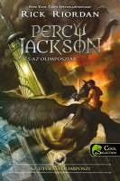
Az Olimposz hősei
Az Olimposz hősei Az elveszett hős
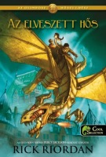
Az Olimposz hősei Neptunus fia
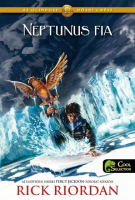
Az Olimposz hősei Athene jele
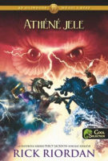
Az Olimposz hősei Hádész háza
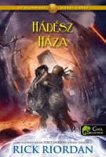
Az Olimposz hősei Az Oliposz vére
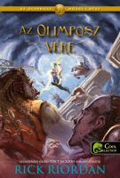
Már láttam a filmeket
Nem kizárt, hogy már hallottál Percy hihetetlen történetéről. Az első (A villámtolvaj) és második (A szörnyek tengere) részből ugyan készült film, de aki csak ezeket látta rengeteg dologból kimaradt. Eleve a filmek nem adják át a megalkotott világ részletességét és a történetből is erősen lefarag. A kimaradt fontos karakterektől kezdve az átírt eseményekig sok minden szól a könyvek mellett.
Percy fejlődéstörténete egy jóslat köré szerveződik, amihez fel kellnőnie. Ez a folyamatot a kalandjain, „küldetésein” keresztül kísérhetjük a végkifejletig. A sorozat zsenialitása az abszurd humorából fakad. A ókori hitvilág és a jelen korszak összeolvasztása kiemeli a kettő közti különbséget. Ezen különbségek a humor legőbb forrásai az alkotásban.